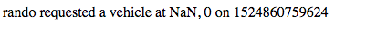
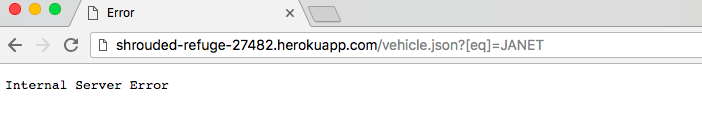
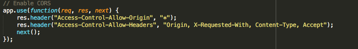

A thorough security and technical analysis was done of Kevin Lee's app for notuber. Notuber is an app designed to work like uber. It takes in coordinates from both passengers and vehicles, and depending on the role of the user, will reveal to them the locations on a map of either the passengeres or vehicles. It was found that he had several issues with his app. While some of these flaws had to do with privacy and security, others were simply tied to his code not handling certain "edge" cases as far as inputing and storing data.
An attempted Cross-Site scripted attack was attempted to reveal any significant errors in the server's code. The "malicious" script that was attempted to be inserted was simply a call to open up a pop-up window. Additionally, a mongodb injection was done to identify any security breaches in the way the server was storing the data. To do this a query was done with the GET path "/json.passenger". Finally, a simple read-over of the code was done to reveal any other blatant issues with the code that would have lead to security breachings.
There were a couple issues with the application's code. Firstly, his code was unable to appropriately respond to situations where the client sends a non-number as a coordinate for either the longitude or latitude. Secondly, the application's server crashes if a mongodb injection is attempted (which is essentially an attempt to access the information in the database of the server). While it is in theory better that the server crashes than provide a malicious user information that they should not have access to, it still fails to protect itself from a mongodb injection since the server ends up crashing. Lastly, the application as a whole is not very secure since it enables full, unrestricted cross-orgin resource sharing (CORS). This means that a user from any domain can access the assets on the applications' server. Though it was important to do this for the sake of the application's purpose, enabling unrestricted CORS could lead to a major security breach.
An Cross-Site Scripting attack was attempted to reveal any security holes in the way the code was sending and recieving data. Interestingly enough, the server side's code was written in such a way that the input sent from the client would be parsed and all unexpected characters would be removed. This prevented any malicious script from making a particularly dangerous impact on the client. However, in the proccess of doing this, it was also found that the application is able to remove said characters, but is unable to differentiate a client's input between a string and a floating int. Therefore, when the application attempted to return the coordinates it would return "NaN" which corresponds with "not a number". The application should have checked if the input was a floating int in the first place and rejected the data if it was found that it was not.
A mongodb injection was done as an attempt to return data from the mongodatabase. It was a rather simple proccess, the injection entailed requesting all the information for the vehicles without a specific username specified. A malicious user could use the ".vehicle/json" path to return the accoutn information of all the vehicles whose usernames weren't an empty string (aka all the users). When this was attempted, the server crashed. Though this is better than a hacker attaining all the information in the database, it is not ideal as the server was forced to crash. A better method of handling this situation would have been to identify this case in the server-side code and be sure that the data that was sent back would be an empty string.
Cross-Origin Resource Sharing (CORS) is a method by which a user operating on one server can recieve permission to access assets from another dommain. A user can make a cross-origin HTTP request when it requests a resource from a domain, protocol, or port different than its own. For security reasons, it is by default disallowed for any application to request HTTP resources from anywhere other than the same domain it was loaded from (same-orgin policy). The code for this application undoes all this by explicity allowing all Cross-Orgin Resource Sharing. Though this was a necessity for the sake of the app doing what it was designed to do, it was still a security risk to include the few lines of code that allowed this unrestricted CORS as any malicious user could theoritically have access to all the resources on the apps server.
The application avoids all major security flaws that were searched for in the testing procces. It seems decently secure, however it is the way that the application responds to attempted breaches which is inadequate. The server should not immidiately crash simply because URL query does not match the exact format as expected. Additionally, there were places where there were no holes because the application currently resides on a smaller scale with around fifty total users. If it were to expand, the code would definately have to change so that it was not allowing CORS in the unlimited way it seems to at the moment. All in all, the application was secure enough for the purposes of the class.
https://tuftsdev.github.io/WebProgramming/notes/web_security.html